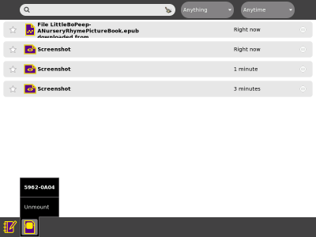
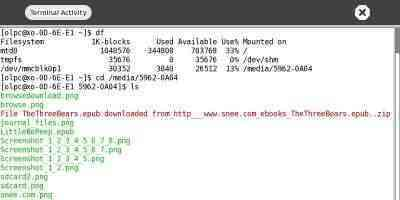

| Prendre soin du XO | Index | Maintenance du XO |
Lorsque vous travaillez sur une Activité Sugar, c'est une bonne chose de faire une seconde copie de votre travail. Utilisez un dispositif de stockage externe pour sauvegarder le travail que vous avez réalisé avec Sugar ; vous pourrez ainsi le transférer sur un autre ordinateur.
Si vous avez à disposition un serveur d'école, vous pouvez sauvegarder votre travail sur le serveur. Si vous voulez reprendre votre travail par la suite, vous pouvez copier le contenu depuis le serveur d'école vers votre ordinateur.
Si vous voulez une seconde copie de vos fichiers, vous pouvez les stocker sur un dispositif externe de stockage tel qu'une carte SD ou une clé USB. Pour copier des fichiers sur un dispositif externe, suivez les étapes suivantes.
1. Lancez l'Activité Journal, soit en cliquant sur l'icône loupe, soit en allant dans Vue Accueil et en cliquant sur l'icône Journal en bas du cercle Accueil
2. Insérez la carte SD ou la clé USB dans votre ordinateur. Le Journal montre une icône dans la barre inférieure lorsque vous insérez votre dispositif externe de stockage.
3. Cliquez pour sélectionner un fichier puis faites glisser le fichier jusqu'à l'icône SD ou USB dans la barre inférieure.
4. Lorsque vous en avez terminé avec la carte SD ou le périphérique USB, cliquez avec le bouton droit sur l'icône et choisissez Démonter.
5. Vous pouvez maintenant retirer votre dispositif externe soit en enlevant directement la clé USB soit en éjectant la carte SD par un appui sur la fente.
Vous pouvez voir le nom d'une carte SD ou d'un clé USB avec l'Activité Terminal.
1. Lancez l'Activité Terminal.
2. Trouvez le nom du dispositif externe qui se trouvera dans le répertoire /media. Par exemple, saisissez:
df
3. Vous voyez le nom de votre carte SD ou de votre clé USB dans la colonne précédée de /media/. Vous devez connaître ce nom pour trouver des fichiers avec la commande suivante.
4. Utilisez la commande de changement de répertoire (cd) pour vous positionner sur votre périphérique de stockage et appuyez enter.
cd /media/5962-0A03
5. Puis utilisez la commande de liste (ls) pour lister tous les fichiers sur le dispositif de stockage et appuyez enter.
ls
Tous les fichiers peuvent être affichés en lançant la commande ls.
Vous enregistrez votre ordinateur sur un serveur d'école en cliquant sur l'icône XO dans Vue Accueil et en choisissant S'enregistrer, puis Redémarrer. Une fois que votre ordinateur est enregistré, une tâche de sauvegarde, qui tourne une fois par jour, collectera les Activités de votre Journal et les stockera sur un ordinateur séparé, le serveur d'école.
Si vous pensez avoir perdu des données ou que vous désirez revenir à une certaine date ou à un certain moment, demandez à votre enseignant le nom de votre serveur d'école.
1. Lancez l'Activité Naviguer
2. Entrez l'adresse web de votre serveur d'école suivie par /ds-restore.
http://myschoolserver/ds-restore3. Dans la liste des données quotidiennes sauvegardées, cliquez sur une date.
4. Dans la liste des documents disponibles à cette date, cliquez sur un document.
5. Selon le type de document, soit l'Activité Lire soit l'Activité Naviguer sera lancée. Sugar la stockera automatiquement et localement une fois qu'elle aura été lancée
Prendre soin du XO Index Maintenance du XO